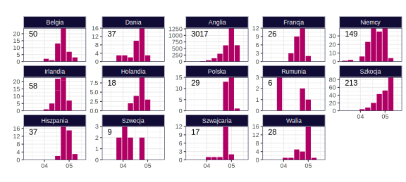

Variants of Concern (VoC)
Zgodnie z nomenklaturą ECDC tą nazwą określa się warianty, co do których dostępne są wyraźne dowody wskazujące na znaczący wpływ na zdolność przenoszenia się, dotkliwość choroby lub odporność, które prawdopodobnie będą miały wpływ na sytuację epidemiologiczną w UE/EOG.
Obecnie dla SARS-COV-2 zdefiniowano następujące VoC:
Alpha (B.1.1.7, brytyjski). Kluczowe mutacje: N501Y, D614G. Dostępne są dowody na zwiększoną zakaźność i dotkliwość. Dominujący wariant w Europie.
Beta (B.1.351, południowoafrykański). Kluczowe mutacje: K417T, E484K, N501Y, D614G. Dostępne są dowody na zwiększoną zakaźność i dotkliwość.
Gamma (P.1, brazylijski). Kluczowe mutacje: K417N, E484K, N501Y, D614G. Dostępne są dowody na zwiększoną zakaźność i dotkliwość.
Delta (B.1.617.2, indyjski). Kluczowe mutacje: L452R, T478K, D614G.
Dane na bazie GISAID. Nie wszystkie te warianty są obecne w Europie w znaczącej liczbie.
Liczba wystąpień wariantu Delta (indyjski, B.1.617.2)
Liczba wystąpień wariantu Alpha (brytyjski, B.1.1.7)

Liczba wystąpień wariantu Gamma (brazylijski, P.1)

Liczba wystąpień wariantu Beta (południowoafrykański, B.1.351)